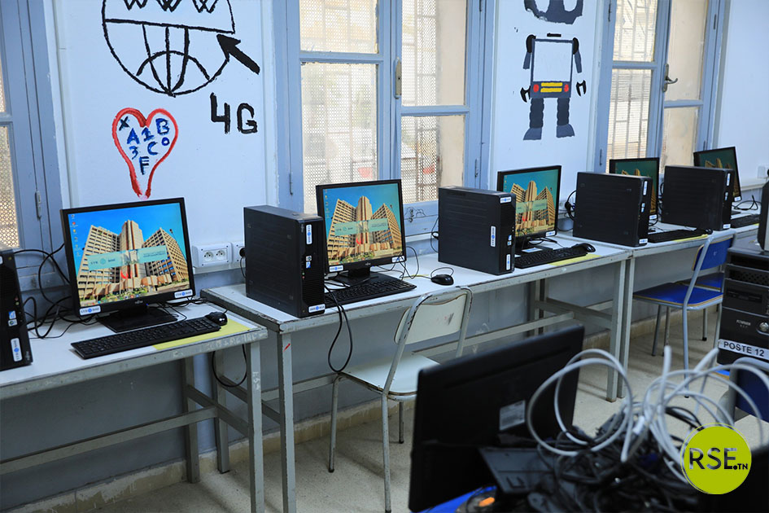

La Section Informatique au Lycée de Hammam Sousse : Le Choix de l'Avenir
Au cœur du Sahel, le Lycée de Hammam Sousse 1 - LHS1 - n'est pas un lycée comme les autres. C'est l'un des établissements les plus anciens et les plus respectés de la région de Sousse, un lycée qui a vu passer des générations d'ingénieurs, de médecins et de créateurs. Et aujourd'hui, sa section la plus porteuse d'avenir est sans conteste la Section Sciences de l'Informatique.
Si tu hésites encore entre Math, Sciences ou Technique, voici pourquoi la section informatique à Hammam Sousse est bien plus qu'une filière, c'est un véritable tremplin.

1. C'est quoi exactement la section informatique ?
En Tunisie, la section Sciences de l'Informatique est une voie d'excellence qui commence dès l'orientation. Contrairement aux idées reçues, ce n'est pas juste "faire de l'informatique".
Au Lycée Hammam Sousse 1, cette filière est couronnée par la 4ème année Sciences de l'Informatique , la classe qui prépare au Bac Info. Le lycée organise régulièrement des épreuves de Bac Blanc pour les 4SI, ce qui prouve un encadrement sérieux qui te met dans les conditions réelles du bac.
Ce n'est pas un hasard si de nombreux anciens du Lycée Hammam Sousse - Section informatique ont poursuivi vers un cycle d'Ingénieur en Génie Logiciel, à l'ISSAT Sousse ou à l'EPI. Le lycée est une porte d'entrée directe vers les meilleures écoles d'ingénieurs.
2. Un enseignement concret, pas juste théorique
L'avantage fondamental de la section Info à Hammam Sousse, c'est qu'on apprend en faisant. Tu n'apprends pas l'informatique sur un tableau noir.
L'enseignement est effectué en laboratoire informatique, afin d'offrir la possibilité à l'étudiant de bien maîtriser l'outil informatique. Les salles info du LHS1 et LHS2 sont équipées, et les clubs info jouent un rôle énorme dans l'apprentissage.
- Penser comme un ingénieur : L'algorithmique t'apprend la logique, la décomposition d'un problème complexe en petites étapes.
- Créer : Programmation avec Python, Pascal, bases de données, développement web. Tu deviens créateur de technologie.
- Comprendre la machine : Architecture, systèmes d'exploitation, réseaux.
3. Les Avantages Majeurs
4. Les Promesses et les Débouchés
Le Bac Sciences de l'Informatique du lycée de Hammam Sousse ouvre toutes les portes les plus prestigieuses :
Les Prépas et les Écoles d'Ingénieurs
ENIT, SUP'COM, ENSI, ISSAT Sousse, ENISO... C'est la voie royale. Tes bases en algorithmique de 4ème année te donneront une année d'avance.
Les métiers de demain
- Développeur Full-Stack & Mobile
- Ingénieur en Intelligence Artificielle
- Expert en Cybersécurité
- Architecte Cloud & Data Analyst
- Créateur de jeux vidéo
Ce ne sont pas des rêves lointains, ce sont les anciens de ta section qui occupent ces postes aujourd'hui à Sousse, Tunis, Paris et Montréal.
5. Pourquoi Hammam Sousse précisément ?
Parce que tu n'es pas seul. À Hammam Sousse 1 et 2, il y a une vraie culture de l'informatique. Les professeurs sont expérimentés, ils connaissent le programme par cœur et ils connaissent les astuces du Bac Info depuis 30 ans. L'émulation entre élèves est forte, les groupes de révision, les partages de séries, les clubs de programmation le soir... C'est une famille.
Le mot de la fin
Choisir la section informatique au lycée de Hammam Sousse, ce n'est pas choisir une matière. C'est choisir de ne plus subir la technologie, mais de la dominer. C'est choisir une filière où ton travail est directement transformé en compétence monnayable. C'est choisir l'avenir.
Si tu aimes la logique, si tu aimes créer, si tu veux un bac qui a du sens, tu es à ta place.